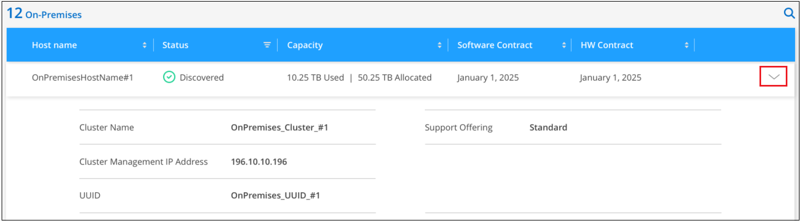

请求文档变更
请求文档变更 在 GitHub 上编辑
在 GitHub 上编辑 提供者指南
提供者指南发现内部 ONTAP 集群
Cloud Manager 可以在内部环境、 NetApp 私有存储配置和 IBM Cloud 中发现 ONTAP 集群。通过将内部集群添加到 Cloud Manager Canvas ，您可以使用与 Cloud Volumes ONTAP 和其他云存储解决方案相同的工具来管理这些集群。
除了能够在这些系统上配置存储之外，将这些系统添加到 Cloud Manager 还可以轻松地在 Digital Wallet 中查看硬件和软件合同状态信息，并为这些集群配置基于云的关键服务。其中包括将数据复制到云，将数据备份到云，将冷数据分层到云以及对这些数据运行合规性扫描。
要求
-
安装在云提供商或内部环境中的 Connector 。
如果您要将冷数据分层到云，则应根据您计划将冷数据分层的位置查看 Connector 的要求。
-
用于将集群添加到 Cloud Manager 的管理员用户帐户的集群管理 IP 地址和密码。
Cloud Manager 使用 HTTPS 发现 ONTAP 集群。如果使用自定义防火墙策略，则它们必须满足以下要求：
-
Connector 主机必须允许通过端口 443 进行出站 HTTPS 访问。
如果 Connector 位于云中，则预定义的安全组允许所有出站通信。
-
ONTAP 集群必须允许通过端口 443 进行入站 HTTPS 访问。
默认的“管理”防火墙策略允许从所有 IP 地址进行入站 HTTPS 访问。如果您修改了此默认策略，或者创建了自己的防火墙策略，则必须将 HTTPS 协议与该策略关联，并启用从 Connector 主机进行访问。
-
-
一组有效的 NetApp 支持站点凭据。请参见操作说明 "将 NSS 帐户添加到 Cloud Manager"。
查看已发现和未发现的内部集群
您可以使用 Cloud Manager 中的 Digital Walkes 或 Discovery 服务查看，发现和管理支持合同下的内部 ONTAP 集群。
要从 Digital Walkes 查看内部集群和许可证详细信息，请执行以下操作：
-
在 Cloud Manager 中，选择 * 数字电子钱包 * 服务。
-
单击 * 内部部署 ONTAP * 选项卡。

此时将显示您的 ONTAP 集群，并显示其状态为是否已在 Cloud Manager 中发现。
如果系统提示您先输入 NetApp 支持站点（ NSS ）帐户凭据，请在支持信息板中输入这些凭据。添加帐户后，将显示该帐户中包含的集群。
要从 Discovery service 查看内部集群和许可证详细信息，请执行以下操作：
-
在 Cloud Manager 中，选择 * 发现 * 服务。
-
如有必要，选择与您的 Active IQ 帐户关联的 NSS 登录。

此时将显示具有有效支持合同的 ONTAP 集群，并显示其状态为是否已在 Cloud Manager 中发现它们。

|
如果您的支持合同到期，系统将从发现页面中删除。但是，您可以继续在其工作环境中管理这些系统。请参见操作说明 "续订 Active IQ 数字顾问提供的支持合同"。 |
查看集群信息和合同详细信息
您可以使用 Digital Walkes 查看集群详细信息以及硬件和软件合同状态。
-
在 * 数字电子邮件 * 中，单击 * 内部部署 ONTAP * 选项卡。
每个集群的行上都会显示软件合同和硬件合同到期日期。
-
如果合同即将到期或已到期，您可以单击 Cloud Manager 右下角的聊天图标以请求延长合同。
-
对于要了解其他详细信息的集群，请单击
 以展开集群信息。
以展开集群信息。
从 Cloud Manager 发现内部集群
您可以通过 Digital Walkes ， Discovery 服务或 Canvas 在 Cloud Manager 中发现内部 ONTAP 集群。发现后，它们将在 Cloud Manager 中用作工作环境，以便您可以管理集群。
从数字市场中发现集群
您可以从数字资源包中发现 ONTAP 集群，并将其添加为工作环境。
-
在 * 数字电子邮件 * 中，单击 * 内部部署 ONTAP * 选项卡。

-
对于要通过 Cloud Manager 管理的集群，请单击 * 发现 * 。
-
在 Discover ONTAP Cluster 页面上，输入管理员用户帐户的密码，然后单击 * 发现 * 。

请注意，集群管理 IP 地址是根据数字电子钱包中的信息填充的。
集群在 _On-Premises ONTAP 页面中的状态变为 * 已发现 * 。
Cloud Manager 会发现集群，并使用集群名称作为工作环境名称将其添加到 Canvas 中的工作环境中。

您可以在右侧面板中为此集群启用服务，以便在集群之间复制数据，设置云数据分层，将卷备份到云或对卷运行合规性扫描。您也可以创建新卷或启动 System Manager 以执行高级任务。
从发现页面发现集群
您可以从 "Discovery" 页面发现 ONTAP 集群，并将其添加为工作环境。
-
在 * 发现 * 页面中，单击 * 集群清单 * 选项卡。

-
对于要通过 Cloud Manager 管理的集群，请单击 * 发现 * 。
-
在 Choose a Location 页面上，已预先选择内部部署 ONTAP * ，因此只需单击 * 继续 * 。
-
在 _Cluster ONTAP 详细信息 _ 页面上，输入管理员用户帐户的密码，然后单击 * 添加 * 。

请注意，集群管理 IP 地址是根据 Active IQ 中的信息填充的。
-
在 Details & Credentials 页面上，集群名称已添加为工作环境名称，因此只需单击 * 执行 * 即可。
Cloud Manager 会发现集群，并使用集群名称作为工作环境名称将其添加到 Canvas 中的工作环境中。
您可以在右侧面板中为此集群启用服务，以便在集群之间复制数据，设置云数据分层，将卷备份到云或对卷运行合规性扫描。您也可以创建新卷或启动 System Manager 以执行高级任务。
从 " 画布 " 页面发现集群
您可以从 " 画布 " 页面发现 ONTAP 集群并将其添加为工作环境。如果集群由于当前没有支持合同而未在 " 数字电子钱包 " 或 " 发现 " 页面中列出，则可以使用这些步骤。
-
在 " 画布 " 页面上，单击 * 添加工作环境 * 并选择 * 内部部署 ONTAP * 。
-
如果出现提示，请创建 Connector 。
有关详细信息，请参见上述链接。
-
在 _Cluster ONTAP 详细信息 _ 页面上，输入集群管理 IP 地址和管理员用户帐户的密码，然后单击 * 添加 * 。
-
在 Details & Credentials 页面上，输入工作环境的名称和问题描述，然后单击 * 执行 * 。
Cloud Manager 会发现集群并将其添加到 Canvas 中的工作环境。
您可以在右侧面板中为此集群启用服务，以便在集群之间复制数据，设置云数据分层，将卷备份到云或对卷运行合规性扫描。您也可以创建新卷或启动 System Manager 以执行高级任务。